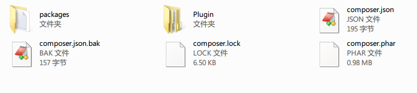

从入门到精通，只需四个步骤，解决下面四个问题即可
1.什么是composer？（入门）
Composer 是 PHP 的一个依赖管理工具。它允许你申明项目所依赖的代码库，它会在你的项目中为你安装他们。Composer 不是一个包管理器。是的，它涉及 "packages" 和 "libraries"，但它在每个项目的基础上进行管理，在你项目的某个目录中（例如 vendor）进行安装。默认情况下它不会在全局安装任何东西。因此，这仅仅是一个依赖管理。--from 百度百科
百度百科基本把官网的介绍翻译的很好，说的再明白一点，请看CSDN一篇博文的解释。
在PHP包管理上面，PHP发展的很缓慢，导致的结果就是很少发现程序员会使用像PEAR这样的工具。相反，大多数开发人员会选择他们自己喜欢的框架来处理代码，比如DB交互、ORIM’S、Oauth、Amazon S3整合等。缺点就是在转换框架的时候（或者根本不需要返回使用框架）就感觉像在做噩梦，因为涉及到使用新工具，你必须重新学习里面的一切东西，而这并不简单。OK，Composer来帮助你解决这些问题。--http://www.csdn.net/article/2012-07-05/2807142
2.composer的环境要求与安装？（进阶）
Composer 需要PHP5.3.2+ 以上的环境来运行。
windows下安装：
a.使用安装包，下载地址：https://getcomposer.org/Composer-Setup.exe
b.正常安装
I.DOS下转到你的PHP安装目录，然后运行代码下载composer.phar (如果下载失败，换成http再试试，螃蟹在win7测试木有问题)
C:\Users\username>cd C:\bin C:\bin>php -r "readfile('https://getcomposer.org/installer');" | phpII.运行下面的代码创建批处理文件，并放到环境变量
C:\bin>echo @php "%~dp0composer.phar" %*>composer.batIII.关闭DOS窗口，再重新打开，运行下面代码正常表示安装成功（螃蟹测试是木有问题的）
C:\Users\username>composer -V Composer version 27d8904
这里螃蟹直接使用阿里云的Centos服务器来做说明
I.下载composer.phar
curl -sS https://getcomposer.org/installer | php
mv composer.phar /usr/local/bin/composer
[root@************** ~]# composer -V Composer version 73e9db5d9952d52a46ecbc20a269a8c5f9c5b0*1 2014-10-07 15:03:19
3.composer的基本使用？（高级）
a.编写composer.json文件，是基本的json格式，格式是“提供者/项目名”:"项目版本"，关于版本号有很多用法，参考官网
{
"require": {
"monolog/monolog": "1.0.*"
}
}
{
"require": {
"lorenzo/cakephp-email-queue": "dev-master",
"driehle/php-crypt-md5": "2.0.*@dev"
},
"config" : {
"vendor-dir" : "packages"
}
}
H:\xampp\htdocs\testcomposer>php composer.phar install
Loading composer repositories with package information
Installing dependencies (including require-dev)
- Installing driehle/php-crypt-md5 (dev-master 2681d97)
Cloning 2681d970ada81d08d1772af2d04274588b5d6825
Writing lock file
Generating autoload files

其中packages为我们需要的依赖库，出现composer.lock就表示composer锁定,再运行更新或下载就无效了，要重新更改composer.json下载需删除lock文件
4.如何在项目中使用composer？（精通）
这里螃蟹演示使用php-crypt-md5这个库，在composer里找的，用来加密的
编写index.php
<?php
include_once('./packages/autoload.php');
use Md5Crypt\Md5Crypt;
$cryptedpassword = Md5Crypt::unix ("123456" ,"123");
$apachepassword = Md5Crypt::apache ("123456" , "123");
echo $cryptedpassword;
echo '<br>';
echo $apachepassword;
?>
$1$123$7mft0jKnzzvAdU4t0unTG1 $apr1$123$LrxDL9PTEgT.C.VIeb/vh1